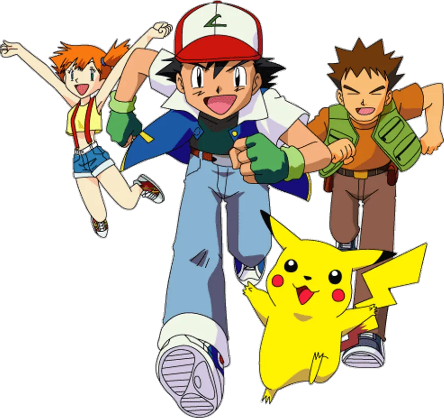
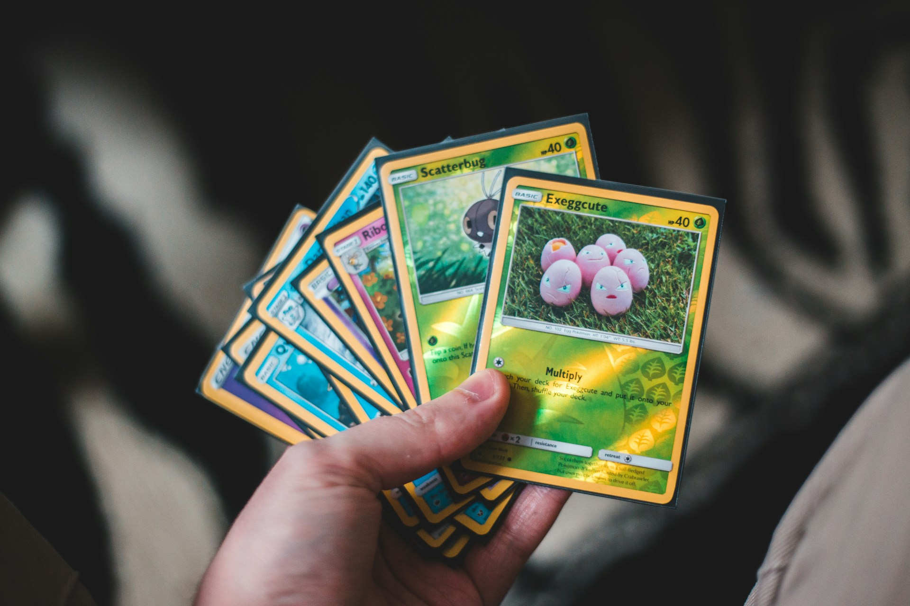

Pokemon is a way of life :)
Hey, everyone! So, you've joined this page because you love all things Pokémon, right? I'm sorry about the lack of content here, but have no fears! One of our admins stream on Twitch Tuesday-Sunday! While he does play other games (mostly Nintendo), there are several days per week where he streams Nuzlockes (i.e. right now!) He's currently doing a Pokémon Unbound RoM Nuzlocke and hasn't been able to make it past the third gym without wiping. I would really appreciate it if you all would check out his channel and chat with us.
Ash Ketchum
Ash Ketchum, known as Satoshi (サトシ) in Japan, is a character in the Pokémon franchise owned by Nintendo, Game Freak, and Creatures. He was the protagonist of the Pokémon anime for the first 25 seasons, as well as the protagonist of several manga series. In Japanese, the character is voiced by Rica Matsumoto. In the English dub, he was voiced by Veronica Taylor in the first eight seasons and Sarah Natochenny afterwards. Ash is a young man who travels with various companions, aiming to fulfill his dream to become a Pokémon Master; his Pokémon lineup constantly changes over the course of the series, with its sole constant member being Pikachu, Ash's first Pokémon. Ash is loosely based on Red, the player character from the Generation I games Pokémon Red and Blue. Satoshi Tajiri, the creator of Pokémon, has stated that Ash represents the 'human aspect' of the series, and that Ash reflects what he himself was like as a child.
Team Rocket
In the long-running Pokémon anime series, a trio of Team Rocket grunts Jessie (ムサシ, Musashi), James (コジロウ, Kojirō), and Meowth (ニャース, Nyarth) are major secondary characters. The three were the primary antagonists of early seasons of the series, where each episode they attempt to kidnap the protagonist's Pikachu. In the earliest produced episodes of the anime, the trio was halfway intelligent and at times were very formidable foes; while they have assumed a more sinister role in various parts of the series, most notably in the Black and White anime, the three mainly act as comic relief. The characters are presented as simple-minded, bringing slapstick antics to the series.[7] Team Rocket's Meowth- a common species of Pokémon- is unusual within the Pokémon canon, as he is the only Pokémon creature able to speak the human language, whereas all other Pokémon in the series only utter syllables of their own names.
Trading Cards
The Pokémon Trading Card Game is a collectible card game developed by Creatures Inc. based on the Pokémon franchise. Standard gameplay cards include Pokémon cards, energy cards, trainer cards, and stadium cards, a variant of trainer cards. Pokémon cards contain data about the creature's type,and where it came from, attacks, ability, and HP as well as any special effects the cards have on the game. Basic (unevolved) Pokémon can change into their evolved forms during the game by playing subsequent evolution cards in the deck. Energy cards can be attached to Pokémon cards to power up attacks, and trainer cards can be used for different effects on the game. Card effects often rely on elements of luck, such as dice rolls and coin tosses, to decide an outcome. Counters are stacked on top of cards in play to indicate damage dealt, and players may choose to put their Pokémon cards on a bench to switch to a different attacker
